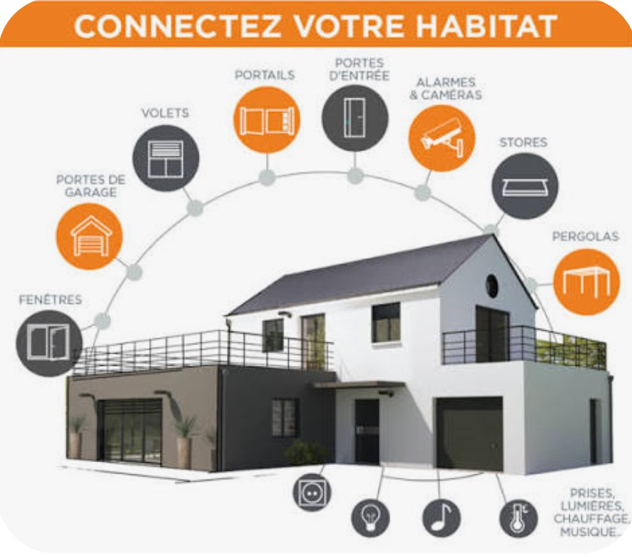

🏙️
Yaoundé
Mobilité, planification des équipements et accès aux services municipaux.
Des enjeux locaux qui appellent des réponses adaptées à chaque territoire.
Mobilité, planification des équipements et accès aux services municipaux.
Congestion, gestion des déchets, drainage et risques d’inondation.
Gestion de l’eau, éclairage public et optimisation énergétique.
Chaleur urbaine, gestion des ressources en eau et éclairage solaire.
Ces pistes sont des propositions d’étude et non un inventaire de dispositifs municipaux en fonctionnement.
La connectivité et les habitats connectés sont des pistes à étudier selon les besoins et les moyens de chaque ville.

Les réseaux de communication, notamment les liaisons satellitaires, peuvent améliorer l’accès à Internet dans certaines zones. Une ville intelligente a besoin de connexions fiables pour transmettre les données de ses services.

Ce schéma présente les équipements qui peuvent être automatisés dans un habitat : portes, fenêtres, volets, alarmes, caméras et éclairage. La domotique constitue un exemple concret des services numériques intégrés à une ville intelligente.